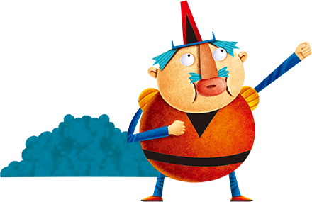

產品洽詢:0800-088-589
首頁
課程特色
教材內容
產品優勢
展示介紹
教材內容
●
主課本
一共七級，每級二十四回。
每冊有十五課主文法教學、三課Power Unit、二課Steam主題教學及期末成就測驗(口試及筆試)一回。
●
必備
主課本、精美AB本習作簿、學習聯絡本。
●
線上系統
課文導讀CD、歌曲音樂、學習表單，另附學習成果測驗卷。
●
選配
1、每冊搭配3本閱讀本，當冊所學習文法及單字，閱讀不超綱，學生開心學習。
2、2~5級可搭Phonic本、6級可搭KK本、7級可搭心智圖單字記憶本。
3、Danny Kids Reading Buddy。

Q：七級完成後的英文程度？
A：國中基礎文法全具備。
各種考試已不針對文法細節，更重視閱讀能力培養，尤其是國中會考。但大多數英語補習班還是重視語法的授課，不斷的透過機械式的練習，將時間投在鮮少使用或完全應用不到的文法。
Q：七級以後如何接續英語的學習？
A：Danny Kids兒童英語學習系統在七級後設有兒童英語精英班，內含實境會話及真人互動寫作，幫助學生在學習上加深加廣。